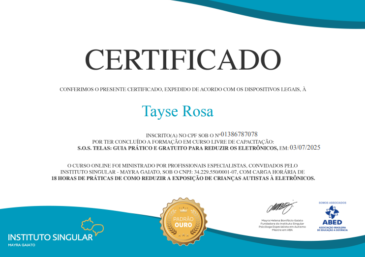
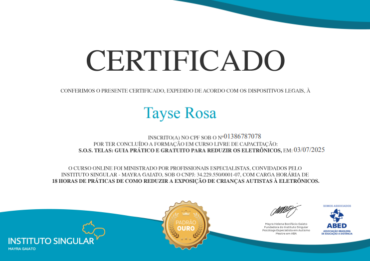
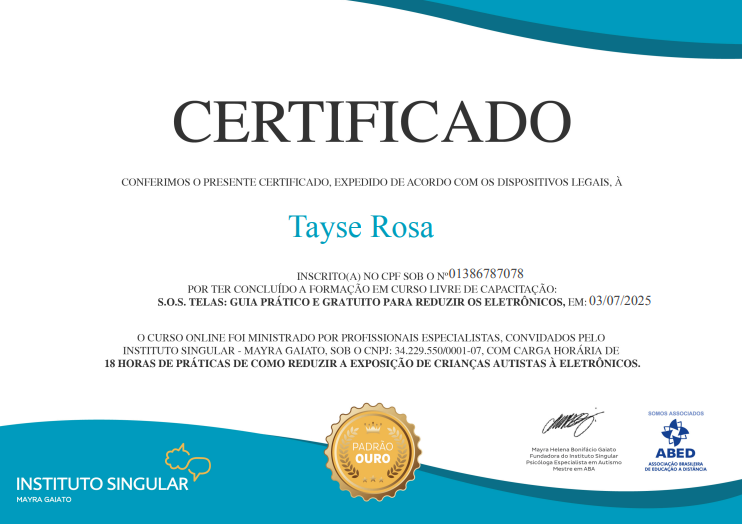

Mural de Certificados
 

Seu cantinho de acolhimento e evolução para crianças com Mutismo Seletivo
Olá! Eu sou Tayse Rosa, mãe de uma criança com Mutismo Seletivo há 3 anos. Essa vivência me motivou a buscar respostas e ferramentas para ajudá-lo, e assim nasceu meu desejo de também ajudar outras famílias. Com base na Análise do Comportamento Aplicada (ABA), ofereço intervenções científicas com muito acolhimento e empatia.
Estou em constante atualização para oferecer um atendimento cada vez mais completo. Ser a Tayse Rosa terapeuta é unir ciência, experiência de mãe e carinho em cada atendimento.
Formação completa em Análise do Comportamento Aplicada com ênfase em técnicas práticas para o desenvolvimento infantil.
Instituto SingularFerramentas práticas para vencer a batalha contra os eletrônicos! Com estratégias para reconectar pais e filhos fora das telas.
Instituto SingularAprendi a guiar famílias no manejo das emoções com leveza, acolhimento e inteligência emocional.
Dra. Maira Gaiato


Além do meu trabalho como terapeuta, também sou voluntária no BC Kids da Brasa Church, um ministério voltado para o público infantil. Essa experiência fortalece ainda mais meu propósito de contribuir para o desenvolvimento emocional, social e espiritual das crianças, sempre com carinho, paciência e dedicação.
Agende uma conversa comigo, Tayse Rosa, e descubra como posso ajudar sua criança a florescer com mais confiança e leveza!
üí¨ Fale comigo pelo WhatsApp